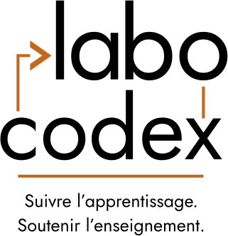
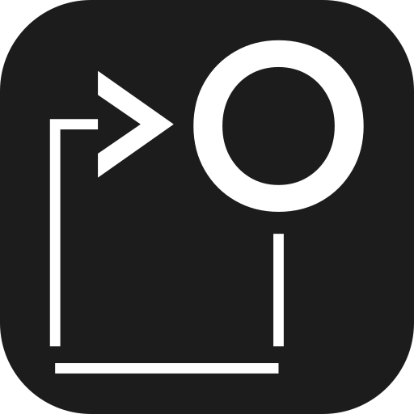
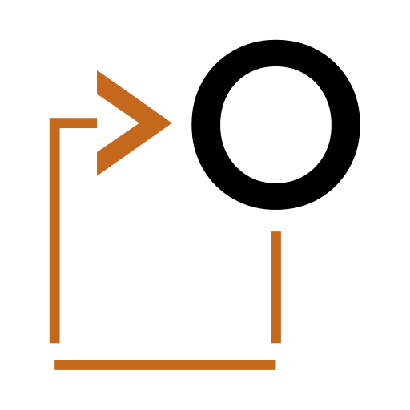
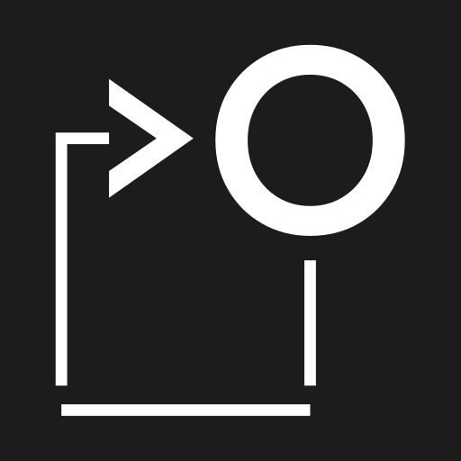

Identité visuelle du 6 novembre 2026. Lettres vectorisées : aucune police requise. Chaque forme existe en blanc et en noir, et en couleur (7 nov.) : lettres blanches ou noires, signes orange. « Couleur sur sombre » : lettres blanches, orange #E8923A, celui de --icone-aide-config ; « couleur sur clair » : lettres noires, orange #C4681E (contraste d'au moins 3:1 sur blanc). Le slogan seul reste à une couleur. les PNG (fond transparent) portent le même nom, suivi de leur largeur en pixels.






Dans l'application (img/) : le logo couleur sur sombre dans l'en-tête (sombre dans les deux thèmes), le logo blanc au pied de l'accueil, l'icône couleur sur clair en 32 et 16 px comme favicon (la couleur sur sombre pour les onglets sombres), l'icône application iOS couleur en 180 px pour l'écran d'accueil (carrée et pleine : iOS applique son propre arrondi). L'orange est inscrit en dur dans les SVG : si --icone-aide-config change, une sentinelle le signale. Les icônes 192 et 512 attendent un éventuel manifeste.